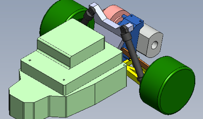
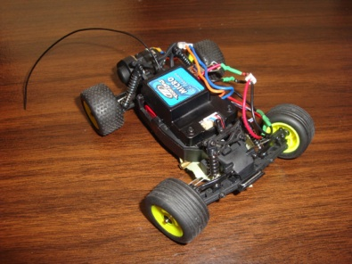
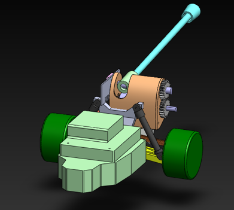

Projects
Losi Tailbot
June 9, 2012

Status update:
Continuing my work with the Mechanical Systems Control Lab, I worked over the summer in Center for Interdisciplinary Bio-Inspiration for Education and Research (CiBER) to create an upgraded version of the pre-existing Tailbot with pitch control. In addition to sporting a weighted carbon fiber tail with a off the shelf Losi RC car as the chassis, the new Tailbot would have increased maneuverability compared to its predecessor. (i.e. turn left and right)
As of now, I have finished the mechanical assembly for Losi Tailbot, which means the tail and its associated actuators are mounted and, when powered, will cause the tail to go through its range of motion. The next steps involve supplementing my robot with electronics to control the tail. Can’t wait to see this project finish!
Picture of the CAD model for the Losi RC car. Using this model, I will design a mount to secure a carbon fiber tube

Picture of the Losi remote controlled car before tail additions
The first iteration of robot parts, fresh from CiBER’s 3D printer. From left to right: the tail mount, the cover, tail support, and gears


The 3D printers are great for rapid prototyping; however, in order to receive usable parts as shown on the right, an involved cleaning procedure (left) must take place. Usually, I have to spend 1-2 hours removing supporting material from the part after a 6-7 hour long manufacturing step.
The 3D conceptual model for the tail integrated with the remote controlled car. Electronics and front suspensions removed for clarity.


Losi Tailbot with tail and mount attached to the chassis.
Shot on 11-29-12
Short clip of Losi flipping its tail, at my control, for the very first time. The robot still has a ways to go, but this moment marked a milestone for Losi Tailbot. Filmed on 11-29-12.